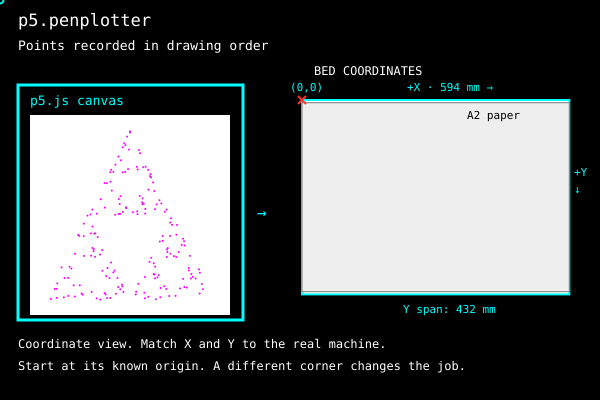

Chaos game · time is the order
Chaos game
One point, three corners. At each step the point jumps halfway to a randomly chosen corner and leaves a dot. A Sierpinski triangle emerges. Calculate one point, plot it, wait, then calculate the next. One click starts the sequence. The carriage returns home after the last point. Try the screen demo, or click the drawing to use your plotter.
sketch.js
// loading sketch.js …- Calculated
- —
- Completed
- —
- Paper
- —
- Paper position
- —
Click the drawing to start plotting; click again to stop.
index.html
<script type="module">
import { PlotterEngine } from "https://cdn.jsdelivr.net/gh/seb-prjcts-be/vanilla.penplotter@4880b41b911ede36b391e2924a4949b27bdb2378/vanilla.penplotter.js";
import * as Ebb from "https://cdn.jsdelivr.net/gh/seb-prjcts-be/vanilla.penplotter@4880b41b911ede36b391e2924a4949b27bdb2378/src/driver/ebb.js";
import { installP5Penplotter } from "https://cdn.jsdelivr.net/gh/seb-prjcts-be/p5.penplotter@b495d269a0f38d8e5fd83b3368a483d0fe50d006/p5.penplotter.js";
installP5Penplotter(p5, PlotterEngine, { driver: Ebb });
</script>
strategy: "drawn" to preserve the order of the game. Try changing the number of points and watch when the triangle becomes recognisable.